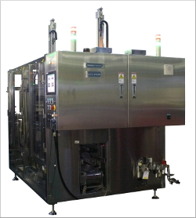
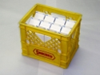
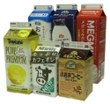

三角屋根型のカートン容器を集積してプラスチッククレート等に入れる装置です。
SUC-80NSをダブルラインにすることで高い処理能力を実現しています。
SUC-80NS同様、サーボモータ化により静音性の向上を実現しています。



- カートンプッシャ部 及び ローディング部をエアシリンダ仕様からサーボモータ仕様へ変更したことにより、集積時及びチャッキング時の製品負荷を軽減し、製品に優しいケーシングをいたします。
- サーボモータ仕様の採用により、エア消費量の削減やメンテナンス性が向上しております。
- チャックヘッド部はコンパクトで耐久性の高いピンチャックヘッドタイプです。
- １ライン単独運転が行えますので、生産状況に合わせた運転が可能です。
- ゲーブルトップカートン容器のサイズは４種類兼用が可能です（２５０ｍｌ、５００ｍｌ、７５０ｍｌ、１０００ｍｌ）。※２５０ｍｌ、７５０ｍｌについてはオプションでの対応となります。
| 能力 | １４,０００パック／時 （７,０００パック／時×２列） |
注：容器により仕様が異なります。詳しくはお問い合せください。
２５０ｍｌ、７５０ｍｌ対応
クレートコンベア制御
端数処理機能
カートンコンベア上流満杯検知機能
クレートコンベア下流満杯検知機能
カートン底摺れ防止機能
クレート底摺れ防止機能
ゲーブル方向検知機能
カートン倒れ検出機能
自動サイズ切替機能
空クレート送り機能
COPYRIGHT(C) 2016 UEDA DAIRY MACHINES MFG.CO.,LTD. All RIGHT RESERVED.